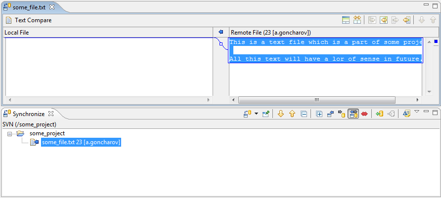

|
|
|
Let's imagine that the user have a shared project "Some project" associated with his workspace copy. There are files "some_file.txt" and "another_file.cpp" containing in the main project folder. But after last synchronization the user understood that he feels very sleepy and needs to have a cup of coffee. But when he returns and runs synchronization again he notices that the "some_file.txt" is decorated with incoming change icon in his synchronization tree view. So he's interested, what has changed, while he was making his magic drink. After double click he gets the following picture:
After thinking for a while he comes to a conclusion that the changes made are surely convenient and decides to update his local copy of the file by clicking on the 'Update' pop-up menu item of the "some_file.txt" file. Of course he can also decide that the made changes have no sense at all and click on the 'Override and Commit' pop-up menu item of this file.
In both cases the decision depends on a user, but the work is done anyway.